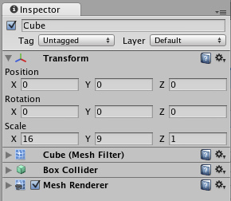

How do I make a Splash Screen?
Here's how to do a splash screen or any other type of full-screen image in Unity. This method works for multiple resolutions and aspect ratios.
- First you need a big texture. Ideally textures should be power of two in size. You might for example use 1024x512 as this fits most screens.
- Make a box using the menubar item.
- Scale it to be in 16:9 format by entering 16 and 9 as the first two value in the Scale:
 - Drag the texture onto the cube and make the Camera point at it. Place the camera at such a distance so that the cube is still visible on a 16:9 aspect ratio. Use the Aspect Ratio Selector in the Scene View menu bar to see the end result.